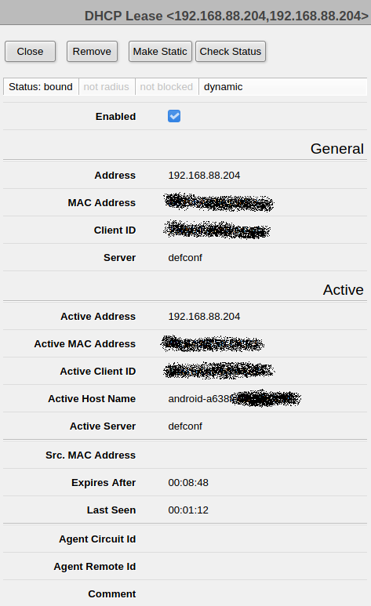
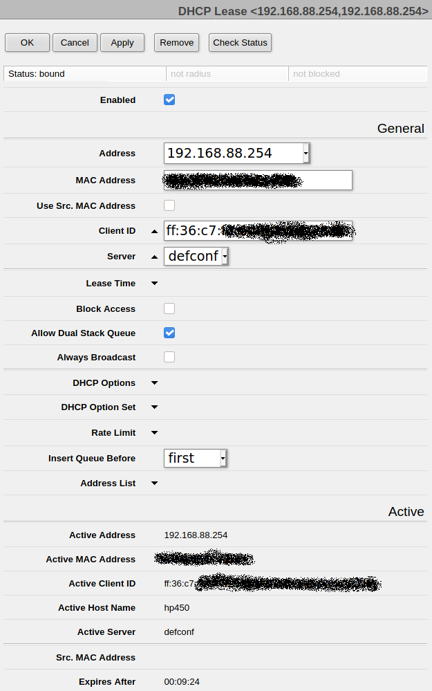
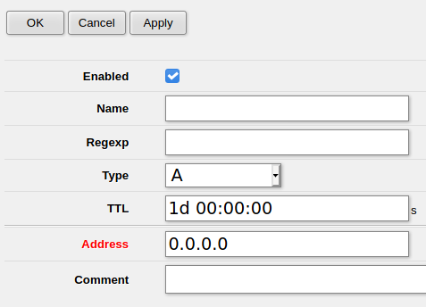

Веб-интерфейс роутера MikroTik hAP Lite настолько страшен и непоследовательно сделан, что пользоваться им сложно даже тем людям, которые до момента общения с этим "домашним" роутером могли без труда настраивать другие сетевые устройства. Разработчики роутера тоже с этим согласны (sic!), и поэтому советуют пользоваться утилитой WinBox или пройти курсы обучения по использованию командного режима. Проблема в том, что утилита WinBox доступна только под платформу Windows. Пользователи Linux и MacOsX должны довольствоваться web-интерфейсом.
Итак, задача: прописать соответствие IP-адресов и имен хостов домашней сети на DNS-сервисе, встроенном в роутер MikroTik. Казалось бы, что может быть прощще?
Тот, кто задавался этим вопросом, наверняка находили обсуждения, в котором утверждалось, что DNS-сервер в MikroTik на это неспособен. Другие объяснят, что инженеры MikroTik и так добавили максимальные возможности в свой домашний роутер, и отсутствие полноценного DNS-сервиса не такая уж Возможно, так оно и было до некоторого времени, но в MikroTik с RouterOS v6.49 (stable) это сделать можно, как минимум в пределах одного сегмента сети (а домашние сети обычно так и устроены).
Итак, что нужно сделать?
Во-первых, надо зафиксировать выдачу IP-адреса по MAC-адресу подключаемого устройства. Это делается через настройку DHCP-сервера. Для этого надо открыть меню:
IP - DHCP Server - Вкладка Leases (Аренда)
В этой вкладке будут видны подключенные в данный момент сетевые устройства и выданные им в аренду IP-адреса. (В аренду IP-адреса как раз и выдает DHCP-сервер).
Для понимания, столбец Active Host Name - это не DNS-имя устройства! Это имя, каким устройство само себя называет. Возможно, оно передается по протоколу WINS или WinBind, но это неточно.
В этом списке нужно нажать на строку с интересуемым устройством. Нажимать надо именно на строку, не на кнопки [-] или [D]. Если устройство не имеет статической привязки IP к MAC, то будет показана "краткая" карточка устройства. Выглядит она так:

Чтобы создать статическую привязку IP и MAC адресов, надо в этом окне нажать кнопку Make Static. При этом, как будто, ничего не произойдет. Таков веб-интерфейс в MikroTik. Но если выйти из этой карточки и снова в нее зайти, то она изменится, и будет выглядеть примерно так:

Здесь элемент "выпадающий список" в параметре Address может ввести в заблуждение, что к MAC-адресу можно привязать только заранее известные IP-адреса, но это не так. Поле ввода Address, на самом деле, редактируемое. И в нем можно ввести любой необходимый администратору IP-адрес (конечно, в допустимом внутри сети диапазоне). Просто вместо нажатия на раскрывающую стрелку, можно установить курсор в кподе ввода и отредактировать IP-адрес.
Во-вторых, надо настроить привязку IP-адреса и сетевого имени в DNS-сервере. Для этого в меню надо нажать:
IP - DNS - Кнопка Static
Появится список существующих привязок IP и сетевых имен (возможно, он будет пустой). В нем надо нажать кнопку Add New, и появится окно создания правила привязки:

В этом окне достаточно ввести имя узла в поле Name и его IP-адрес, заданный в DHCP.